Predicting housing prices with linear regression
Disclaimer
It has since brought to my attention since using this dataset, that according to this article by M Carlisle that this Boston housing dataset has an ethical problem in that the authors of the dataset engineered a non-invertible variable “B” assuming that racial self-segregation had a positive impact on house prices (source). Moreover the goal of the research that led to the creation of this dataset was to study the impact of air quality but it did not give adequate demonstration of the validity of this assumption.
As such please keep this in mind as this rudimentary analysis was made long before this information was brought to light; and I encourage folks who are interested to read the sources provided and use alternative datasets for similar projects. I present this project unedited from its original form as it was written in 2019.
Introduction
This project utilizes a variety of linear regression algorithms in
order to predict the housing price in the city of Boston, or
MEDV. These are all of the variables in the dataset. This
data is maintained in the datasets module of
sklearn but it can also be found online on the UCI Machine
Learning Repository or from Kaggle.com.
CRIM - per capita crime rate by town
ZN - proportion of residential land zoned for lots over 25,000 sq.ft.
INDUS - proportion of non-retail business acres per town.
CHAS - Charles River dummy variable (1 if tract bounds river; 0 otherwise)
NOX - nitric oxides concentration (parts per 10 million)
RM - average number of rooms per dwelling
AGE - proportion of owner-occupied units built prior to 1940
DIS - weighted distances to five Boston employment centres
RAD - index of accessibility to radial highways
TAX - full-value property-tax rate per \$10,000
PTRATIO - pupil-teacher ratio by town
B - 1000(Bk - 0.63)^2 where Bk is the proportion of blacks by town
LSTAT - % lower status of the population
MEDV - Median value of owner-occupied homes in $1000sSo first we will read in the data.
First we can look at the first few observations and also check for any missing values.
## CRIM ZN INDUS CHAS NOX ... TAX PTRATIO BLACK LSTAT MEDV
## 0 0.00632 18.0 2.31 0 0.538 ... 296 15.3 396.90 4.98 24.0
## 1 0.02731 0.0 7.07 0 0.469 ... 242 17.8 396.90 9.14 21.6
## 2 0.02729 0.0 7.07 0 0.469 ... 242 17.8 392.83 4.03 34.7
## 3 0.03237 0.0 2.18 0 0.458 ... 222 18.7 394.63 2.94 33.4
## 4 0.06905 0.0 2.18 0 0.458 ... 222 18.7 396.90 5.33 36.2
##
## [5 rows x 14 columns]## CRIM ZN INDUS ... BLACK LSTAT MEDV
## count 506.000000 506.000000 506.000000 ... 506.000000 506.000000 506.000000
## mean 3.613524 11.363636 11.136779 ... 356.674032 12.653063 22.532806
## std 8.601545 23.322453 6.860353 ... 91.294864 7.141062 9.197104
## min 0.006320 0.000000 0.460000 ... 0.320000 1.730000 5.000000
## 25% 0.082045 0.000000 5.190000 ... 375.377500 6.950000 17.025000
## 50% 0.256510 0.000000 9.690000 ... 391.440000 11.360000 21.200000
## 75% 3.677083 12.500000 18.100000 ... 396.225000 16.955000 25.000000
## max 88.976200 100.000000 27.740000 ... 396.900000 37.970000 50.000000
##
## [8 rows x 14 columns]So note that there are no missing variables, although it should be
noted that the CHAS and RAD variables are
categorical rather than continuous variables.
Data Visualization
As an introductory step it is good to visualize the response variable against the target variables.
# response vs the continuous target variables
sns.pairplot(data = df, height = 3,
y_vars = ['MEDV'],
x_vars = ['CRIM', 'ZN', 'INDUS', 'RM', 'AGE'])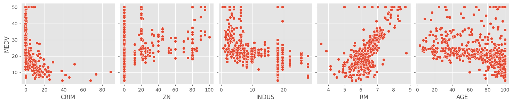
sns.pairplot(data = df, height = 3, y_vars = ['MEDV'],
x_vars = ['PTRATIO', 'LSTAT', 'RAD', 'CHAS'])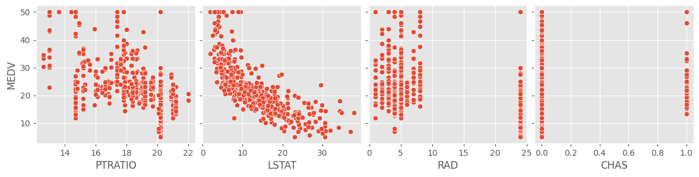
A cursory glance at the scatterplots of the response and target
variables show that RM and LSTAT have
something of a linear relationship with MEDV. The rest of
the variables don’t seem to show much of a correlation. We can
scrutinize this further by looking at a correlation matrix. This will
help us determine which features to include in the final model, a
process known as feature selection.
Feature Selection
Correlation Matrix
This will tell us if any of the features are highly correlated with one another, which is bad since one of the assumptions of regression is that the features are independent from one another. We can also look at how the response variable correlates with the features.
# Setting style for seaborn
sns.set_context("notebook")
sns.set_style("darkgrid")
# 2 significant figures
pd.set_option("display.precision", 2)
# Correlation matrix
corr = df.corr()
plt.figure(figsize = (10,10))
sns.heatmap(corr, vmax = .8, linewidths = 0.01, square = True, annot = True, cmap = 'coolwarm', linecolor = 'white')
plt.title('Correlation Matrix')
plt.show()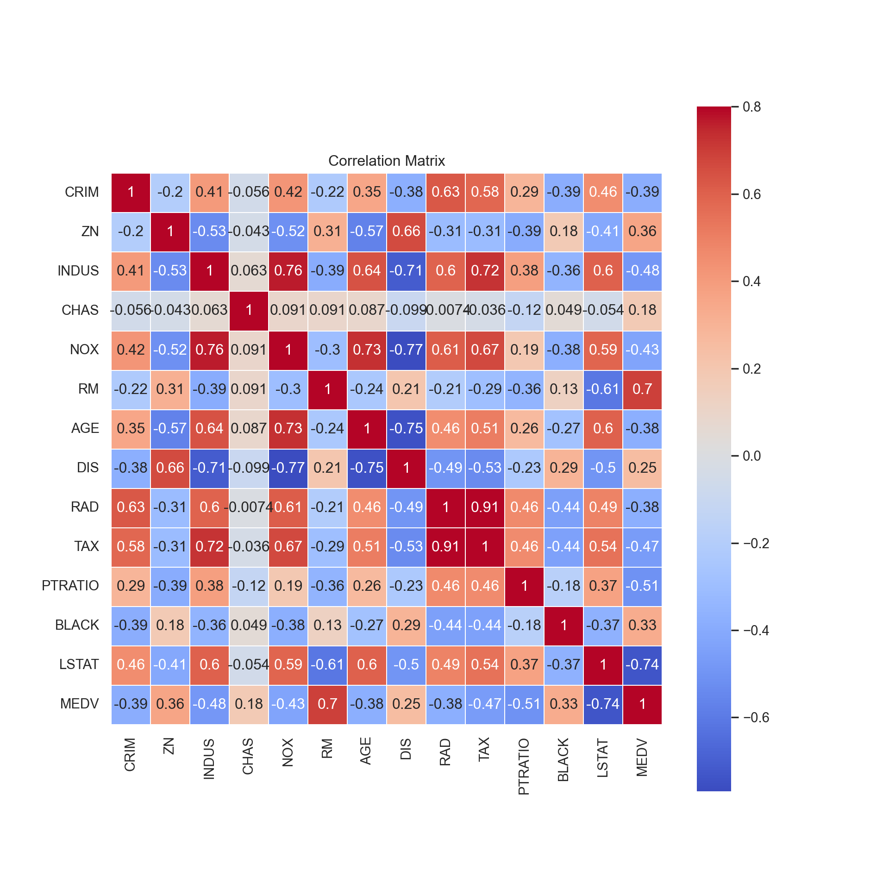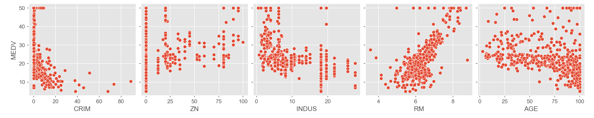
As we expected from our graphs, we notice that the features that
correlate the highest with MEDV are RM, the
average number of rooms, and LSTAT, the percent lower
status of the population.
DIS, which is weighted distances to Boston’s employment
centers, has a strong negative correlation with 3 variables:
INDUS, the proportion of non-business acres,
NOX, the concentration of nitric oxides, and
AGE, the proportion of homes built before 1940.
Multicollinearity
In building regression models we don’t want to have highly correlated features, otherwise known as multicollinearity. Multicollinearity can result in inaccurate estimations of the regression coefficients, give false p-values when conducting tests, and worst of all, degrade the predictability of the model, among other problems.
In general when building a model you want to have something less complex (i.e. less features) to reduce overfitting and correlated features tend to give similar information about the response variable. Therefore I am going to check which features have excessive correlation with the other features (> 0.75) and drop them from the dataset.
# Assigning the response variable as y and the target variables as X
y = df['MEDV']
X = df.drop('MEDV', axis = 1)
# drop features that are highly correlated with other features
# matrix of absolute values of correlation
corr_matrix = X.corr().abs()
# Select upper triangle of correlation matrix
upper = corr_matrix.where(np.triu(np.ones(corr_matrix.shape), k=1).astype(bool))
# Find index of feature columns with correlation greater than 0.75
to_drop = [column for column in upper.columns if any(upper[column] > 0.75)]
print(to_drop)## ['NOX', 'DIS', 'TAX']It appears that NOX, DIS, and
TAX are highly correlated with one another so I am going to
drop them from the dataset.
## CRIM ZN INDUS CHAS RM AGE RAD PTRATIO BLACK LSTAT
## 0 6.32e-03 18.0 2.31 0 6.58 65.2 1 15.3 396.90 4.98
## 1 2.73e-02 0.0 7.07 0 6.42 78.9 2 17.8 396.90 9.14
## 2 2.73e-02 0.0 7.07 0 7.18 61.1 2 17.8 392.83 4.03
## 3 3.24e-02 0.0 2.18 0 7.00 45.8 3 18.7 394.63 2.94
## 4 6.91e-02 0.0 2.18 0 7.15 54.2 3 18.7 396.90 5.33Now that we’ve taken care of that, we want to look at the
distribution of the response variable, MEDV, by visualizing
it in a histogram and a normal probability plot.
# histogram and normal probability plot
sns.distplot(y, hist = True)
fig = plt.figure()
res = stats.probplot(y, plot = plt)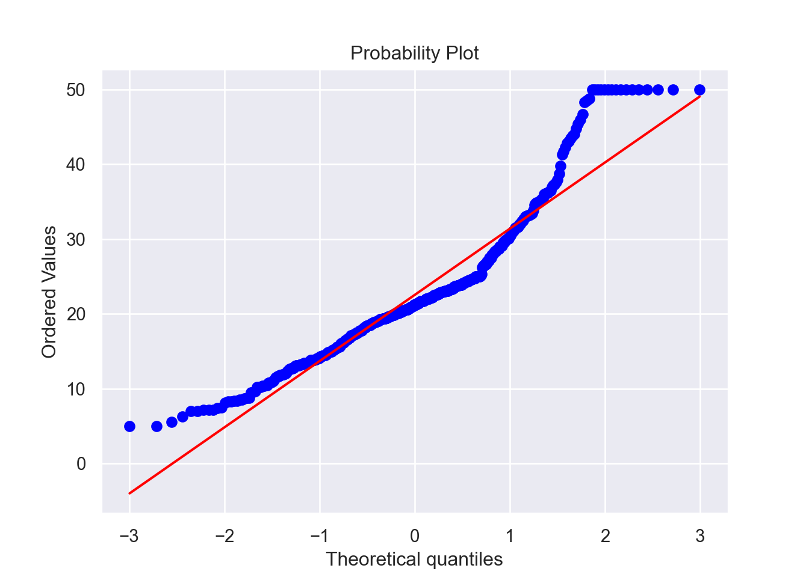
Assumptions
To be able to apply linear regression analysis, we have to ensure that the assumptions are fulfilled. These are as follows:
- Linearity of the residuals
- Independence of the residuals
- Normality of the residuals with a mean of 0
- Homoskedasticity of the residuals
Normality
Now let’s look at the distributions of these two variables to see if they follow a Normal distribution. We can also conduct a Shapiro-Wilk test, which tests the null hypothesis that the data is from a Normal distribution. The test returns a W-statistic, which itself has a p-value. If the p-value of the test statistic is below our alpha level of 0.05, then we reject the null hypothesis and conclude that the data is not from a Normal distribution.
The Central Limit Theorem
It is important to point out that while Normality is an assumption, even when it is violated it doesn’t necessarily invalidate the model. It is commonly understood that non-Normal residuals is fairly typical in the “real world” and the Central Limit Theorem (which stipulates that data conforms to a Normal distribution at a large enough sample size, generally \(n > 15\)) generally takes precedence.
Multicollinearity
The third assumption has to do with multicollinearity. We already
established early on that several other variables had correlation with
one another and dropped those features, and LSTAT and
RM had a moderate correlation coefficient of \(-0.61\), which we don’t think is enough to
consider them multicollinear.
Independent Residuals
Next we need to check that the residuals of the data are independent from each other. Another way to describe this would be autocorrelation of the residuals. We can test this with a Durbin-Watson test. If the test statistic of the test is between 1.5 and 2.5, then there is little to no autocorrelation. Below 2 is considered positive autocorrelation and above 2 is considered negative autocorrelation. 2 would mean no autocorrelation at all.
MSE and R-squared
In predicting for continuous variables such as in linear regression, you have a few different metrics to quantify the strength and accuracy of your model. The first is the Mean Squared Error, or MSE. It is one of a few ‘loss’ functions used to quantify the strength of a regression model. It is effectively the average of the squares of the errors, or
\[MSE = \frac{1}{n} \sum_{i=1}^{n}(y_i - \hat{y}_i)^2\]
where \(y_i\) is the true value of the response variable given input \(X_i\) and \(\hat{y}_i\) is the predicted value. It quantifies how far away the predictions are from the true values, and the closer it is to zero, the better.
R-squared (\(R^2\)), otherwise known as the coefficient of determination, is the percentage of the variation in the response that is explained by the model, hence it is always between 0 and 1, where 1 means that 100% of the variation in the response is explained by the model.
After splitting and scaling the data, we can put together a function that builds the model, fits it, calculates the evaluation metrics like the MSE and R-squared, and tests the assumptions.
Training/Test Split
In order to build our model and test it, we do a split of the data between a training set and a test set. Basically when fitting a model, you “train” it on the training set (typically a much bigger subset of the data), then apply the model to the test set. Essentially the model looks at what values for \(X\) (target variable(s)) return what values for \(y\) (response variable) in the training set, then uses the test set of \(X\) values to make predictions for \(y\). Then to evaluate the model, we compare the predictions that the model made (\(\hat{y}\)) against the true values of \(y\) (the test set).
Cross-Validation and Parameter Tuning
Cross validation is the process of training learners using one set of data, and testing it using a different set. While there are different kinds of cross-validation methods, we are using k-fold cross validation. In this case, the dataset is divided into \(k\) subsets (or folds) and each fold is used as a test set with the rest used as a training set. Then the average errors across all \(k\) trials is computed. The variance is reduced the higher \(k\) is, but obviously this can get rather computationally expensive once you get into larger datasets and high values of \(k\).
It is important to distinguish that this train/test split during cross-validation is distinct from the train/test split of the data that happens in the initial data preparation process. In this case, the training data (80% of the dataset) is split into \(k\) folds to be trained and tested on, and later the optimized, cross-validated model is tested on the 20% of test data we set aside at the beginning. This test data is always to be kept separate in the model training process to reduce overfitting.
Parameter tuning is the process of selecting the values for a model’s
parameters that maximize the model’s accuracy. The function
GridSearchCV (from sklearn.model_selection)
uses 3-fold cross validation by default and tests a number of different
values for the parameters of a model, such as the number of estimators.
We can use it to choose the optimal parameters for each of the models we
are going to fit.
Variable Importance
Some of the models we are going to fit have a
feature_importance attribute that allows us to visualize
the varying strengths of each feature on the model itself. This can help
us determine which features are most crucial in predicting the response,
and maybe even build a smaller model based on those crucial
features.
In previous runs of this code I had checked the variable importance
of the ‘full’ model which used all the available variables, minus the
ones that were collinear. It ended up that RM and
LSTAT were the most important variables in all of the
models, so I decided to try a model that only uses those two variables.
This makes sense since these were the two variables that had a
significant correlation with the response variable.
# Data Preparation
X = X[['RM', 'LSTAT']]
# split between training and testing sets, (70/30 split)
X_train, X_test, y_train, y_test = train_test_split(X, y, test_size = 0.3, random_state = 100)
# scaling the data
scaler = StandardScaler().fit(X_train)
# scaling the training and test splits and adding the column names back
X_train = scaler.transform(X_train)
X_train = pd.DataFrame(X_train, columns = X.columns)
X_test = scaler.transform(X_test)
X_test = pd.DataFrame(X_test, columns = X.columns)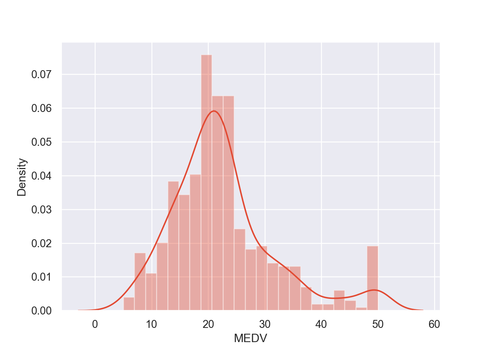
# function that finds the mean of the residuals, tests for Normality and independence
def residual_tests(residuals):
# Mean of the residuals
residuals_mean = round(np.mean(residuals), 3)
print("{} is the mean of the residuals.".format(residuals_mean))
# Checking for Normality of the residuals, Shapiro-Wilk test
W_stat, p = stats.shapiro(residuals)
W_stat = round(W_stat, 3)
p = round(p, 3)
print("{} is the test-statistic for the Shapiro-Wilk test with a p-value of {}.".format(W_stat, p))
if p < 0.05:
print("We conclude that the residuals are not Normally distributed.")
else:
print("We conclude that the residuals are Normally distributed.")
# Checking independence of the residuals, Durbin-Watson test
dw = round(durbin_watson(residuals), 3)
print("{} is the test-statistic for the Durbin-Watson test.".format(dw))
if dw > 2.5 and dw <= 4:
print("We conclude there is strong negative autocorrelation in the residuals.")
if dw > 0 and dw < 1.5:
print("We conclude there is strong positive autocorrelation in the residuals.")
else:
print("We conclude there is little to no autocorrelation in the residuals and therefore they are independently distributed.")# function that plots the predicted values against the true values, the residual plot, and the QQ-plot of the residuals
# requires seaborn and matplotlib.pyplot
def plot_model_diagnostics(y_pred, y_test, residuals):
# Predictions vs True Values
plt.figure()
sns.regplot(x = y_pred, y = y_test, ci = None, scatter_kws = {'color': 'b'}, line_kws = {'color': 'r'})
plt.xlabel('Predictions')
plt.ylabel('True Values')
plt.title("Predictions vs True Values")
# Residual Plot
plt.figure()
sns.residplot(x = y_pred, y = y_test, lowess = True, scatter_kws = {'color': 'b'}, line_kws = {'color': 'r'})
plt.title("Residual Plot")
# QQ-plot
plt.figure()
stats.probplot(residuals, plot = plt)
plt.title("QQ-plot of the Residuals")# function to plot variable importance, only works for estimators with feature_importances_ attribute
def plot_variable_importance(model):
importances = model.best_estimator_.feature_importances_
# Sort feature importances in descending order
indices = np.argsort(importances)[::-1]
# Rearrange feature names so they match the sorted feature importances
names = list(X.columns.values)
names = [names[i] for i in indices]
# Create plot
plt.figure()
plt.title("Feature Importance")
plt.bar(range(X_train.shape[1]), importances[indices])
plt.xticks(range(X_train.shape[1]), names, rotation=90)
plt.show()# function to plot 3D scatterplot of the model
def plot_3d_scatter(X_test, y_pred, y_test, x, y, z, title, color):
test_df = X_test.copy()
test_df['MEDV_pred'] = y_pred.tolist()
test_df['MEDV_true'] = y_test.tolist()
test_df['Residual'] = test_df['MEDV_true'] - test_df['MEDV_pred']
# Visualizing the OLS Predictions
plt.figure()
fig = px.scatter_3d(test_df, x = x, y = y, z = z,
title = title,
color = color)
fig.show()Ordinary Least Squares (OLS) Regression
First we will start with the simplest of machine learning algorithms, the ordinary least squares linear regression model. We use the function to fit the model and test it against the assumptions, so that we can evaluate the strength of the model within context. We can also help diagnose model issues by plotting the predictions against the true values and plot the residuals as well.
The implementation of multiple linear regression with multiple features (independent variables) appears like so:
\[ y = \beta_0 + \beta_1x_1 + ... + \beta_nx_n \]
Where \(y\) is the response, \(x_i\) is the feature (or input variable), \(\beta_0\) is the intercept, and \(\beta_1\) through \(\beta_n\) are the coefficients for each of the \(n\) independent variables.
# Linear Regression Model
regr_LR = LinearRegression()
# Hyper-parameter tuning
parameters_LR = {'fit_intercept': [True, False], 'copy_X': [True, False]}
grid_LR = GridSearchCV(estimator = regr_LR, param_grid = parameters_LR)
model_LR = grid_LR.fit(X_train, y_train)
predictions_LR = model_LR.predict(X_test)
# MSE
mse_LR = round(mean_squared_error(y_test, predictions_LR), 3)
rmse_LR = round(np.sqrt(mse_LR), 3)
print("{} is the Mean Squared Error.".format(mse_LR))## 38.397 is the Mean Squared Error.## 6.197 is the Root Mean Squared Error.# R-squared
r2_LR = round(model_LR.score(X_test, y_test), 3)
print("{} is the R-squared.".format(r2_LR))## 0.621 is the R-squared.## -0.012 is the mean of the residuals.
## 0.846 is the test-statistic for the Shapiro-Wilk test with a p-value of 0.0.
## We conclude that the residuals are not Normally distributed.
## 2.106 is the test-statistic for the Durbin-Watson test.
## We conclude there is little to no autocorrelation in the residuals and therefore they are independently distributed.
# Plotting model diagnostics
plot_model_diagnostics(predictions_LR, y_test, residuals_LR)
# Plotting model
plot_3d_scatter(X_test, predictions_LR, y_test, x = 'RM', y = 'LSTAT', z = 'MEDV_pred',
title = 'Plot of Predictions from OLS Model', color = 'Residual')
We see that the mean of the residuals is approximately zero and that they are also independently distributed. Although the residuals of the model are not from a Normal distribution based on our tests and this QQ-plot, the sample size (504) is sufficiently large enough for us to bypass this assumption. In practice, residuals seldom fulfill this requirement.
Looking at the residual plot however, we see a trend in how they are distributed (note the curve in the red line). Ideally this red line would be as horizontal as possible. Note the imbalance on the Y-axis with how the residuals are distributed. These all point towards the conclusion that this model might not be the strongest.
Decision Tree
Decision trees are a simple machine learning model that can be utilized for classification and also for regression, which is our use case. The algorithm works in much the same way it does for a classification problem as it does for regression, where it chooses a label. In the regression case, it chooses between ‘leaves’ which are the splits in the data.
For example, suppose in our training set we have values for \(x\) ranging from 1-100, and each value for \(x\) corresponds to a value for \(y\). The algorithm can split these values into ranges, such as 1-25, 25-50, 50-75, 75-100. It will then take a value for \(y\) that represents that range for \(x\).
# Decision Tree Regression
regr_DT = DecisionTreeRegressor(random_state = 10)
# Hyper-parameter tuning
parameters_DT = {'max_features': ['sqrt', 'log2', None], 'max_depth': range(2,20)}
grid_DT = GridSearchCV(estimator = regr_DT, param_grid = parameters_DT)
model_DT = grid_DT.fit(X_train, y_train)
predictions_DT = model_DT.predict(X_test)
# MSE
mse_DT = round(mean_squared_error(y_test, predictions_DT), 3)
rmse_DT = round(np.sqrt(mse_DT), 3)
print("{} is the Mean Squared Error.".format(mse_DT))## 32.842 is the Mean Squared Error.## 5.731 is the Root Mean Squared Error.# R-squared
r2_DT = round(model_DT.score(X_test, y_test), 3)
print("{} is the R-squared.".format(r2_DT))## 0.676 is the R-squared.## 0.039 is the mean of the residuals.
## 0.813 is the test-statistic for the Shapiro-Wilk test with a p-value of 0.0.
## We conclude that the residuals are not Normally distributed.
## 2.177 is the test-statistic for the Durbin-Watson test.
## We conclude there is little to no autocorrelation in the residuals and therefore they are independently distributed.# Plotting
plot_model_diagnostics(predictions_DT, y_test, residuals_DT)
# Plotting variable importance
plot_variable_importance(model_DT)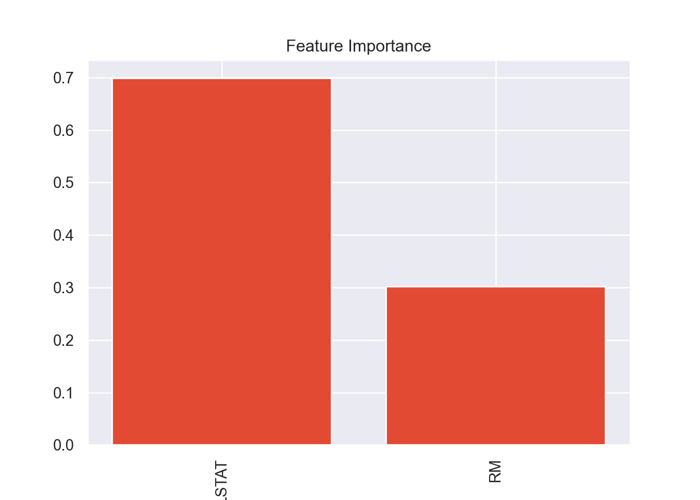
# Plotting model
plot_3d_scatter(X_test, predictions_DT, y_test, x = 'RM', y = 'LSTAT', z = 'MEDV_pred',
title = 'Plot of Predictions from Decision Tree Model', color = 'Residual')
Random Forest
Random forest is a machine learning algorithm that, true to its name, utilizes decision trees. It is a bootstrap aggregation (bagging) method that leverages many decision trees. This ensemble learning technique helps minimize overfitting which is a problem common when utilizing decision trees. It also introduces an element of randomness that makes it more robust.
While Random Forests, like decision trees, can be utilized for classification, this is a regression problem since we are predicting a continuous response variable rather than a categorical one.
It works by sampling multiple subsamples (with replacement) from the training dataset, then trains many decision trees for regression, where each leaf node outputs the mean of all of the label values in the node itself. The “forest” then returns the average of the predictions of all of the decision trees.
While the randomness and scale of the algorithm makes it effectively reduce overfitting, it suffers from a lack of interpretability, making it a ‘black-box’ algorithm.
# Random Forest Regressor
regr_RF = RandomForestRegressor()
# Hyper-parameter tuning
parameters_RF = {'n_estimators': [10, 20, 50, 100, 400],
'max_depth': [3, None],
'max_features': [1,2]}
grid_RF = GridSearchCV(estimator = regr_RF, param_grid = parameters_RF)
model_RF = grid_RF.fit(X_train, y_train)
predictions_RF = model_RF.predict(X_test)
# MSE
mse_RF = round(mean_squared_error(y_test, predictions_RF), 3)
rmse_RF = round(np.sqrt(mse_RF), 3)
print("{} is the Mean Squared Error.".format(mse_RF))## 29.964 is the Mean Squared Error.## 5.474 is the Root Mean Squared Error.# R-squared
r2_RF = round(model_RF.score(X_test, y_test), 3)
print("{} is the R-squared.".format(r2_RF))## 0.704 is the R-squared.## -0.085 is the mean of the residuals.
## 0.835 is the test-statistic for the Shapiro-Wilk test with a p-value of 0.0.
## We conclude that the residuals are not Normally distributed.
## 2.098 is the test-statistic for the Durbin-Watson test.
## We conclude there is little to no autocorrelation in the residuals and therefore they are independently distributed.# Plotting
plot_model_diagnostics(predictions_RF, y_test, residuals_RF)
# plot variable importance
plot_variable_importance(model_RF)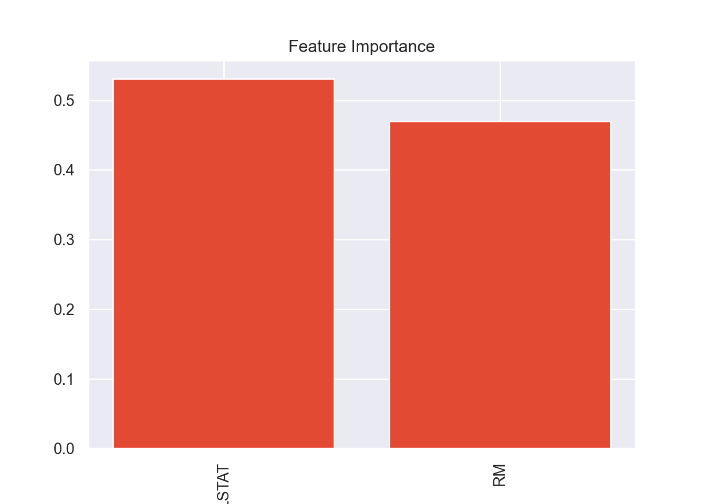
Gradient Boosting
Boosting is a sequential technique which works on the principle of tree ensembles, like random forests. The basic idea behind boosting algorithms is building a weak model, making conclusions about the various feature importance and parameters, and then using those conclusions to build a new, stronger model. One of the drawbacks of a single decision/regression tree is that it fails to include predictive power from multiple, overlapping regions of the feature space.
Gradient boosting works by fitting a model to the data, \(F_1(x) = y\), then fits a model to the residuals, \(h_1(x) = y - F_1(x)\), and then creates a new model, \(F_2(x) = F_1(x) + h_1(x)\), and it continues over and over.
# Gradient Boosting Regressor
regr_XGB = XGBRegressor(random_state = 10)
# Hyper-parameter tuning
parameters_XGB = {'n_estimators': [10, 20, 50, 100, 400],
'max_depth': [2,5,7,9],
'learning_rate': [0.1, 0.2]}
#'min_samples_split': [2,3,4,5],
# 'loss': ['ls']}
grid_XGB = GridSearchCV(estimator = regr_XGB, param_grid = parameters_XGB)
model_XGB = grid_XGB.fit(X_train, y_train)
predictions_XGB = model_XGB.predict(X_test)
# MSE
mse_XGB = round(mean_squared_error(y_test, predictions_XGB), 3)
rmse_XGB = round(np.sqrt(mse_XGB), 3)
print("{} is the Mean Squared Error.".format(mse_XGB))## 29.235 is the Mean Squared Error.## 5.407 is the Root Mean Squared Error.# R-squared
r2_XGB = round(model_XGB.score(X_test, y_test), 3)
print("{} is the R-squared.".format(r2_XGB))## 0.711 is the R-squared.## 0.324 is the mean of the residuals.
## 0.801 is the test-statistic for the Shapiro-Wilk test with a p-value of 0.0.
## We conclude that the residuals are not Normally distributed.
## 2.122 is the test-statistic for the Durbin-Watson test.
## We conclude there is little to no autocorrelation in the residuals and therefore they are independently distributed.# Plotting
plot_model_diagnostics(predictions_XGB, y_test, residuals_XGB)
# plot variable importance
plot_variable_importance(model_XGB)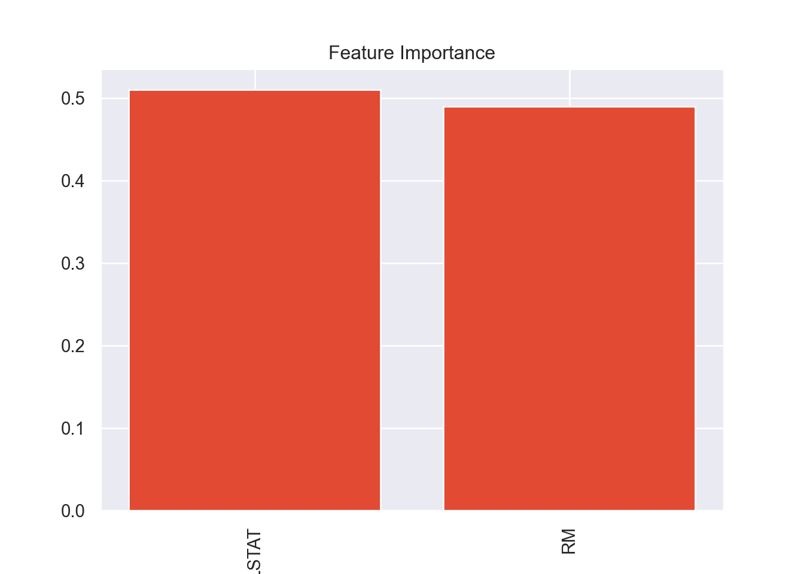
# Plotting model
plot_3d_scatter(X_test, predictions_XGB, y_test,
x = 'RM', y = 'LSTAT', z = 'MEDV_pred',
title = 'Plot of Predictions from Gradient Boosting Model', color = 'Residual')
k-Nearest Neighbors
Unlike decision trees and random forests, k-Nearest Neighbors is an unsupervised learning technique. It can also be utilized for both classification and regression. This algorithm uses “feature similarity” to predict the values of new data points, which means that predictions are made based on how closely a given value resembles others in the data set. The name of the algorithm refers to the number of “neighbors” (or nearby data point), \(k\), that are considered when determining the predicted value of a data point.
# KNN Regression
regr_KNN = KNeighborsRegressor()
# Hyper-parameter tuning
parameters_KNN = {'n_neighbors': range(1,11), 'weights': ['uniform', 'distance'],
'metric': ['euclidean', 'manhattan'],
'algorithm': ['auto', 'ball_tree', 'kd_tree', 'brute']}
grid_KNN = GridSearchCV(estimator = regr_KNN, param_grid = parameters_KNN)
model_KNN = grid_KNN.fit(X_train, y_train)
predictions_KNN = model_KNN.predict(X_test)
# MSE
mse_KNN = round(mean_squared_error(y_test, predictions_KNN), 3)
rmse_KNN = round(np.sqrt(mse_KNN), 3)
print("{} is the Mean Squared Error.".format(mse_KNN))## 31.013 is the Mean Squared Error.## 5.569 is the Root Mean Squared Error.# R-squared
r2_KNN = round(model_KNN.score(X_test, y_test), 3)
print("{} is the R-squared.".format(r2_KNN))## 0.694 is the R-squared.## 0.02 is the mean of the residuals.
## 0.776 is the test-statistic for the Shapiro-Wilk test with a p-value of 0.0.
## We conclude that the residuals are not Normally distributed.
## 2.177 is the test-statistic for the Durbin-Watson test.
## We conclude there is little to no autocorrelation in the residuals and therefore they are independently distributed.
# Plotting
plot_model_diagnostics(predictions_KNN, y_test, residuals_KNN)
# Plotting model
plot_3d_scatter(X_test, predictions_KNN, y_test,
x = 'RM', y = 'LSTAT', z = 'MEDV_pred',
title = 'Plot of Predictions from k-Nearest Neighbors Model', color = 'Residual')
Comparing Algorithms
Now that we have calculated the MSE and the R-squared for all of the different models, we want to compare them. We want to minimize the MSE and maximize the R-squared. In order to pick the best model, we can plot these two values for each of the models onto a scatterplot. The best model would have a low MSE and a high R2, so ideally it would be in the upper left quadrant of the plot, where MSE is on the x-axis and R-squared in on the y-axis.
# Initializing a matrix that will be filled with MSE and R-squared
records_full = []
algorithms = ('OLS Regression', 'Decision Tree', 'Random Forest', 'Gradient Boosting', 'k-Nearest Neighbors')
mse_all = (mse_LR, mse_DT, mse_RF, mse_XGB, mse_KNN)
rmse_all = (rmse_LR, rmse_DT, rmse_RF, rmse_XGB, rmse_KNN)
r2_all = (r2_LR, r2_DT, r2_RF, r2_XGB, r2_KNN)
# Filling matrix in with values
for i in range(0,5):
records_full.append({'Algorithm': algorithms[i],
'MSE': mse_all[i],
'RMSE': rmse_all[i],
'R2': r2_all[i]})
# converting into a DataFrame
records_full = pd.DataFrame(records_full)
print(records_full)## Algorithm MSE RMSE R2
## 0 OLS Regression 38.40 6.20 0.62
## 1 Decision Tree 32.84 5.73 0.68
## 2 Random Forest 29.96 5.47 0.70
## 3 Gradient Boosting 29.23 5.41 0.71
## 4 k-Nearest Neighbors 31.01 5.57 0.69
plt.figure()
g = sns.scatterplot(x = 'MSE', y = 'R2', data = records_full, hue = 'Algorithm')
g.legend(loc = 'center left', bbox_to_anchor = (1.25, 0.5), ncol = 1)
plt.title('MSE vs R-squared, by Algorithm, Small Models')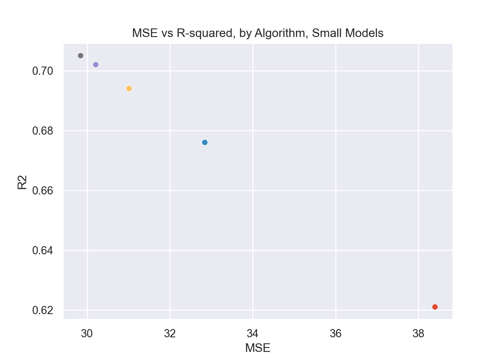
So the gradient boosting model is the strongest one in this case, and the very simple linear regression model is the worst performing. This illustrates the difference between a very complex model and a very simple one and how effective they are, respectively. Note the clear negative correlation between R2 and MSE. This makes sense since the greater the error of the model (MSE), the less variance in the response variable that would be explained by the predictors (R-squared). Also notable is that the decision tree model was ‘worse’ than both gradient boosting and random forest, this is at least in part due to the fact that they are ensemble applications of decision trees.
Feature Trimming
Recall that earlier I mentioned using a larger model that included more features to fit the regression models. When testing them I found that the strongest models actually lost some of the coefficient of determination (with the strongest model only losing 0.1) and the simpler models pretty much stayed the same or got slightly more effective.
Since the strongest model only lost 0.1 from the
R-squared, I decided it was worth it to drop the excess features. In the
original model there were 11 dependent variables and in the more
conservative one there are only 2, and the R-squared coefficient is
still relatively strong.
It’s important to note that the most complex and effective models, gradient boosting and random forest, were the most hit hard by losing the other features. Conversely, the other models got stronger or stayed about the same. This lends credence to the idea that simple models prefer less features (or don’t need many features) whereas the complex ones are better when it comes to using many features.
Predictions
Now that we know which model is the best, we can use it to generate
predictions. Again the response variable in this case is
MEDV or the median value of the home, in the thousands. Our
independent variables are LSTAT, the % lower status of the
population, and RM the average number of rooms. So suppose
we have a new house whose LSTAT is 14 and whose
RM is 6.
Recall that the training and the test data were scaled to a Normal
distribution with the StandardScaler function. We will have
to scale any new input data as well so that our model can recognize
it.
It’s important also to note that the gradient boosted model, as well
as the random forest and decision tree models, are not good at
extrapolating to data that is outside of the range the data was trained
on. For example, if the data was only taught to predict
MEDV based on values of RM between 3 and 10,
it will not have a good prediction for an RM of 12. This is
a problem inherent to decision tree models and the models that utilize
them e.g. gradient boosting trees, random forest.
# Creating new data
new_data = pd.DataFrame({'RM': [6], 'LSTAT': [14]})
# scaling new data
new_data = scaler.transform(new_data)
new_data = pd.DataFrame(new_data, columns = ['RM', 'LSTAT'])
# Prediction
model_XGB.predict(new_data)[0]## 20.005268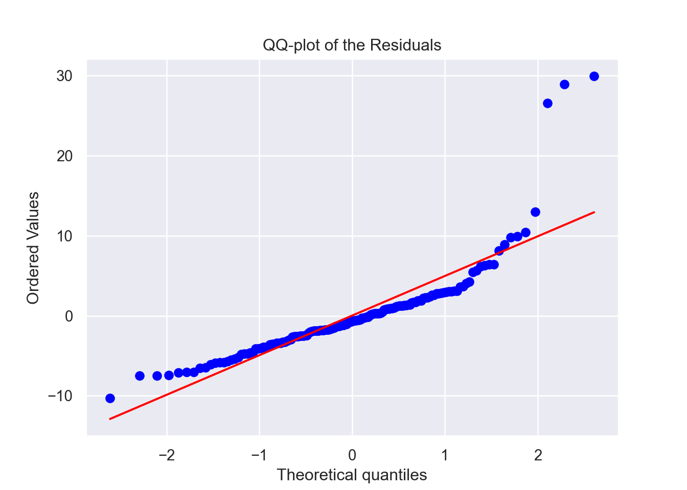
As you can see the expected value for MEDV is about 20,
or $20k.